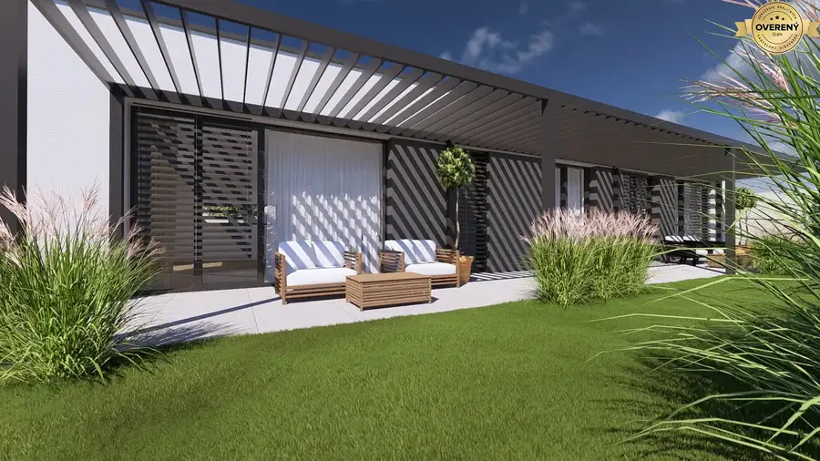
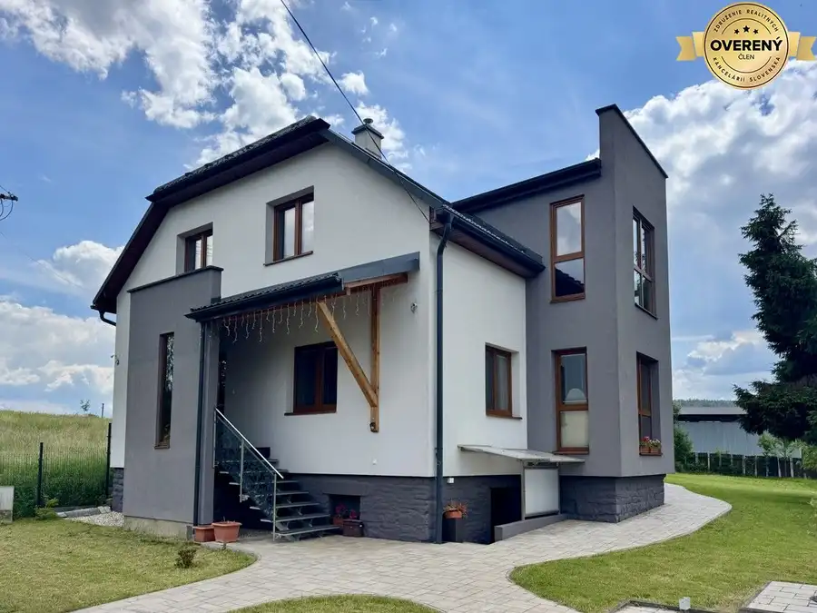
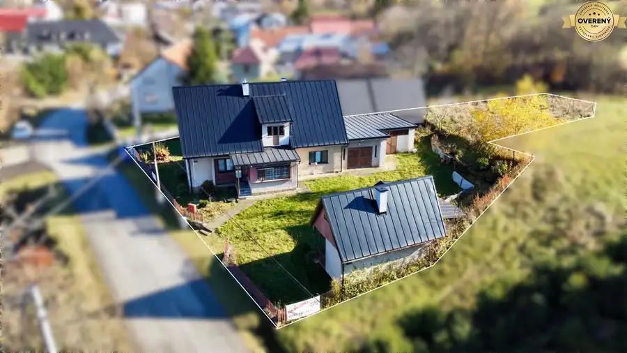

Rodinný dom 4 izbový v obci Hrabské okr. Bardejov
Hrabské
- Dispozícia4-izbový
- Plocha123 m²
- Poschodie0.
- Vlastníctvoosobné
- Energetická triedaA
O nehnuteľnosti
KING REAL exkluzívne ponúka na predaj novovostavbu rodinného domu v obci Hrabské okr. Bardejov. Ide o jednopodlažnú novostavbu - bungalov s valbovou strechou, ktorý sa predáva v stave štandard tzn. dokončená kúpeľňa a WC so sanitou, podlahy v celom dome, obložkové dvere, vypínače a zásuvky, sadrokartónové stropy a maľba.
3D obhliadka:
https://livetour.istaging.com/4590cc2b-af7b-417c-a19b-d78e6c33fe5c?index=1
Videoobhliadka:
https://www.facebook.com/share/r/19WipvPhRz/
Rodinný dom pozostáva z týchto miestností:
Zádverie, chodba, WC, obývačka prepojená s jedálňou a kuchyňou, špajza, kúpeľňa s WC, 2 x detská izba, spálňa, šatník, technická miestnosť.
Úžitková plocha domu je 122,61 m2.
Rozloha pozemku: 774 m2
Romery pozemku: (šxd) 19 m x 33 m - 46 m
Prístupová cesta: asfaltová z miestnej komunikácie
IS: vodovodná, elektrická prípojka a dočasne žumpa (Obec plánuje vybudovať kanalizáciu).
Materiálovotechnické prevedenie domu v dokončenom stave:
- základová železobetónová doska o hrúbke 150 mm vystúžená KARI sieťou
- obvodové nosné murivo o hrúbke 300 mm z pórobetónových tvárnic TERMALICA
- vnútorné nosné murivo o hrúbke 240 mm z pórobetónových tvárnic TERMALICA
- vnútorné nenosné murivo o hrúbke 150 mm z pórobetónových tvárnic TERMALICA
- dvojplášťová valbová strecha zateplená
- strešná betónová krytina TERA
- komínový systém jedno prieduchový
- cementový poter
- TÚV a podlahové kúrenie (pozn. v cene nie je zahrnuté tepelné čerpadlo, na ktoré si kupujúci bude žiadať dotáciu)
- zateplenie z polystyrénu hrúbky 160 mm
- fasádna silikatová omietka
- interierová sadrová omietka
- sadrokartónové stropy
- maľba bielou farbou
- 2 x WC závesný systém
- okná a zasklenné steny sú plastové s izolačným 3 – sklom
- vnútorné plastové parapety a vonkajšie plechové oplastované
- vstupné dvere plastové, bezpečnostné, svetlík zasklený s izolačným dvojsklom
- vnútorné rozvody elektroinštalácie s revíziou ukončené vypínačmi a zásuvkami v
bielej farbe, štandardné vybavenie miestnosti: centrálne svetlo /kábel/ v strede
miestnosti, 3x zásuvka 230V, vypínač pri vstupe do miestnosti (bez svietidiel)
- laminátové podlahy v izbách
- dlažba, obklad a sanita v kúpeľni a WC
- obložkové dvere
- zapojená el. rozvodová skriňa
- predpríprava na vonkajšie kamery
- prístup do domu (zhutnený makadam)
- potrebné revízie, energetický certifikát a súčinnosť pri kolaudácii rodinného domu
Predajná cena: 195.000,-eur (hypotéka/hotovosť)
Poskytujeme kompletný realitný servis a hypotekárne poradenstvo.
Obec Hrabské sa nachádza 19 km od mesta Bardejov, v obci je škôlka, základná škola, potraviny.
V prípade záujmu ma neváhajte kontaktovať na tel. čísle , mailom: alebo osobne v kancelárií KING REAL na ul. Hviezdoslavova 1 (Hotel pod Bránou).
Parametre
| Rozloha pozemku | 774 m² |
|---|---|
| Celková rozloha | 774 m² |
| Úžitková plocha | 123 m² |
| Poschodie | prízemie |
| Počet izieb | 4 |
| Vlastníctvo | osobné |
| Odvoz odpadu | áno |
| El. napätie | 230/400V |
| Kanalizácia | žumpa |
| Kúpeľňa | áno |
| Vykurovanie | vlastné - elektrické |
| Zateplený objekt | áno |
| Energetický certifikát | A |
| Prístupová cesta | asfaltová cesta |
| Novostavba | áno |
| Dátum zverejnenia | 18. 8. 2026 |
Kde to je
Mohlo by Vás zaujímať

Rodinné domy10 199 900 €NOVOSTAVBA - Rodinné domy 4 izb. v obci Gaboltov okr. Bardejov Gaboltov 4-izbový121 m² KING REAL Bardejov exkluzívne ponúka na predaj nový projekt 2 rodinných domov v centre obce Gaboltov, ktorá je vzdialená len 15 km od mesta Bardejov.…
Rodinné domy10 224 900 €Veľký rodinný dom na rozsiahlom pozemku v obci Zborov okr. Bardejov Zborov 6-izbový234 m² KING REAL exkluzívne ponúka na predaj zariadený priestranný rodinný dom s úžitkovou plochou 234 m², ktorý je situovaný na rozsiahlom pozemku s…
Rodinné domy10 79 900 €Rodinný dom v obci Šarišské Čierne okr. Bardejov - ZNÍŽENÁ CENA Šarišské Čierne 3-izbový94 m² KING REAL exkluzívne ponúka na predaj rodinný dom v obci Šarišské Čierne, ktoré je vzdialené 14 km od mesta Bardejov. Na pozemku sa nachádza (sú…